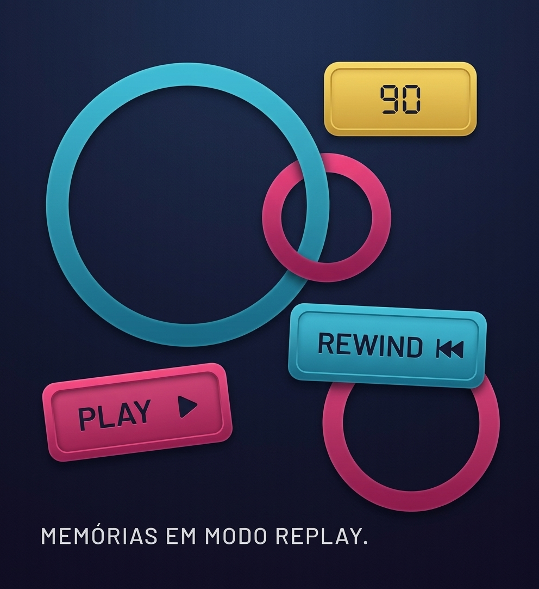
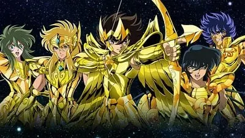
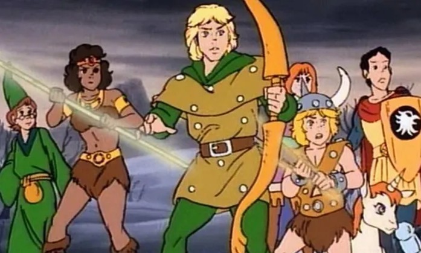

80 • 90 • 2000
HISTÓRIAS QUE ATRAVESSARAM GERAÇÕES.
Uma viagem pela TV, pelos heróis e pelas as animações que transformaram tardes comuns em grandes aventuras
ANTES DOS ANOS 90
CLÁSSICOS QUE CHEGARAM PARA FICAR
Duas produções anteriores aos anos 90 que permaneceram vivas na memória de quem cresceu cercado por fantasia e aventura.

Heróis e batalhas que marcaram gerações
1986
CAVALEIROS DO ZODÍACO

Uma aventura fantástica em outro mundo
1983
CAVERNA DO DRAGÃO
FAIXA ESPECIAL
HERÓIS QUE DOMINARAM A TV
Tokusatasu, ação e personagens que viraram memória afetiva.
METAL HERO
JASPION
NINJA HERO
JIRAIYA
TOKUSATASU
KAMEN RIDER BLACK
O PASSADO CONTINUA PRESENTE
NOVAS PRODUÇÕES, VELHAS EMOÇÕES
X-MEN '97
01
CONTINUAÇÃO
X-MEN '97
OS SIMPSONS
02
CULTURA POP
OS SIMPSONS
GRAVITY FALLS
03
MISTÉRIO
GRAVITY FALLS